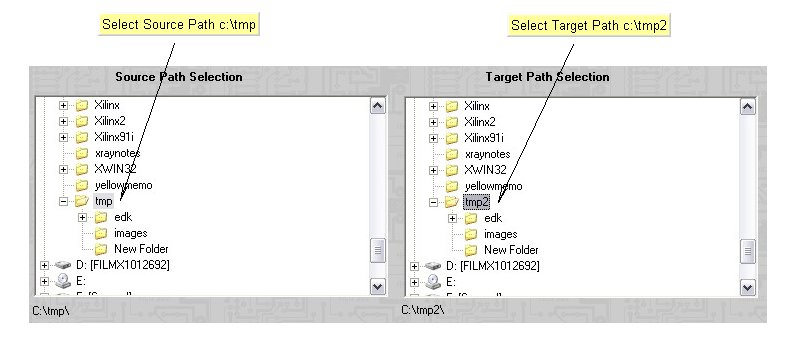
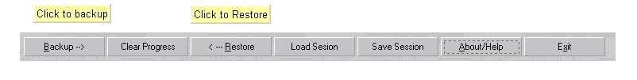
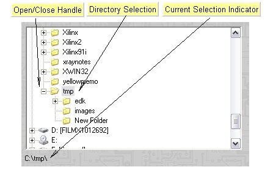
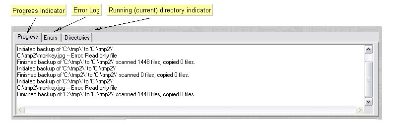
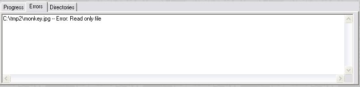
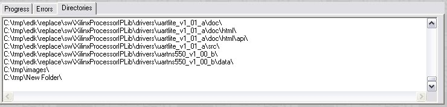

TimeDim
Copy Machine
TimeDim
Copy Machine
2. The TimeDim user interface
TimeDim is constructed to be as simple as possible. (but not simpler) Backing up a whole subdirectory structure is as easy as 1.) selecting a source directory, 2.) selecting a target directory, and pressing one button.


2.1 Essential elementsThe TimeDim UI consists of three main sections. 1.) Source/Target Selection Controls. 2.) Log/Progress indicators. 3.) Operation Controls

The Directory Selection operates like any tree control. To
open/expand a directory, click on the open/close handle (plus sign).
The same can be achieved by pressing right arrow to open a directory
and left arrow to close the directory. The directory selection is
navigated by the up and down arrow key, and/or by left clicking the
mouse on it.2.2 Progress Window
The progress window is a tabbed window, consisting of three sections. The first section shows current copy progress, as it happens, with each file (as it is being copied) as a separate line item. This section also serves as a feedback for controlling entities like start/stop. The second section shows the accumulated error messages, with the each file that encountered an error being a separate line item. The third section shows current copy progress, with the each directory as it is encountered and scanned, as a separate line item.

The following window shows the error section after copying the c:\tmp
to c:\tmp2. We made a file read only for the purposes of showing the
error log: 
The following window shows the directories section after copying the c:\tmp to c:\tmp2

T.O.C.
(manual's table of contets)